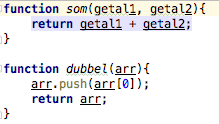
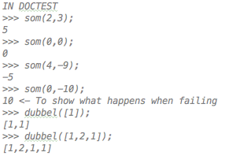
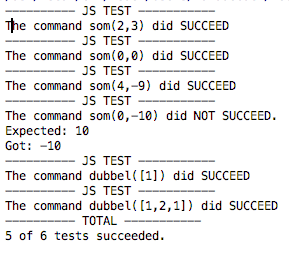

JS-Tester
Deze - hoogstwaarschijnlijk met buggevulde - webapplicatie maakt het mogelijk om tijdens het werken met javascript ook tests te kunnen runnen. Dien in bovenstaande textarea je doctest-like tests in. En plak het resultaat in je javascript script. Wij doen de rest voor jou.
Wil je alles op 1 lijn - ten koste van de leesbaarheid? Klik dan op de knop 'MINIFY'.
2 simpele javascript functies.
De doctest tests.

De code gegenereerd door deze webaplicatie tests.
Het resultaat na het runnen van de tests.